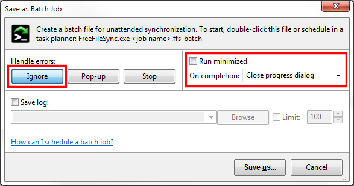
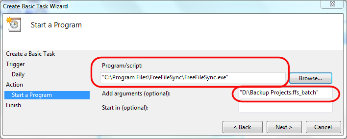

Enable checkbox Run minimized to avoid blocking while showing the result after synchronization. Alternatively you can leave this option checked and select the On completion action Close progress dialog located in synchronization settings. FreeFileSync will then show a progress dialog but close it automatically when it is finished.
Note: Even if the progress dialog is not shown at the beginning, you can make it visible during synchronization by double-clicking the FreeFileSync notification area icon.

- Windows 7 Task Scheduler:
- Go to Start and run taskschd.msc.
- Create a new basic task and follow the wizard.
- Make Program/script point to the location of FreeFileSync.exe and insert the ffs_batch file into Add arguments.
- Use quotation marks to protect spaces in path names, e.g. "D:\Backup Projects.ffs_batch"

Note
Beginning with Windows Vista the Program/script always needs point to an executable file like FreeFileSync.exe even if ffs_batch file association is set. If a ffs_batch file is entered instead the task will return with error code 0xC1, "%1 is not a valid Win32 application".
- Windows XP Scheduled Tasks:
- Go to Start → Control Panel → Scheduled Tasks and select Add Scheduled Task.
- Follow the wizard and select FreeFileSync.exe as program to run.
- Fill the input field Run:
<FreeFileSync installation folder>\FreeFileSync.exe <job name>.ffs_batch
- Ubuntu Linux Gnome-schedule:
- Install Gnome-schedule, if necessary: sudo apt-get install gnome-schedule
- Go to System → Preferences → Scheduled tasks
- Enter the command:
<FreeFileSync installation folder>/FreeFileSync <job name>.ffs_batch